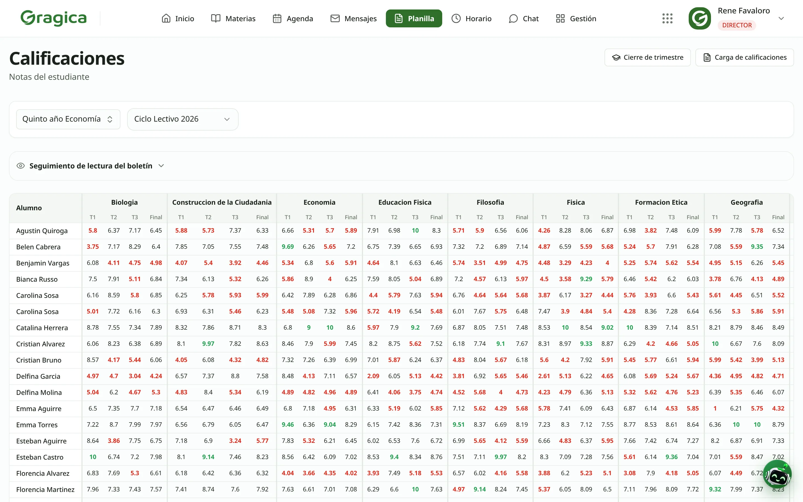

Calificaciones
Los docentes cargan en la misma pantalla donde ven el curso, y el boletín sale de ahí.

Captura real · datos ficticios
 Pedir una demo →
Pedir una demo →
Pedir una demo →
Pedir una demo →